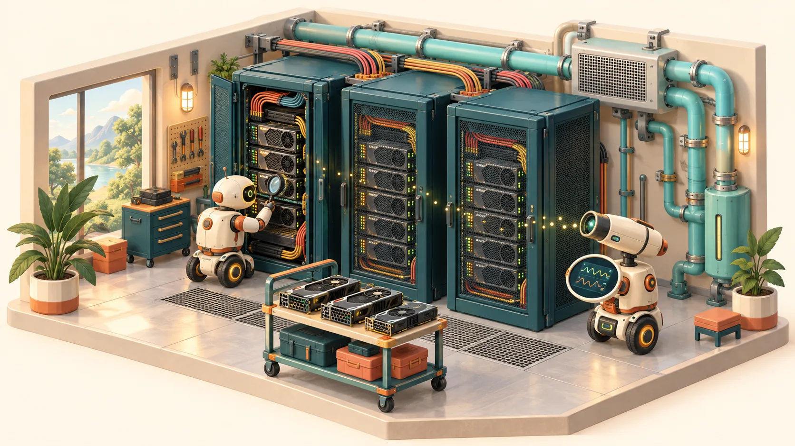
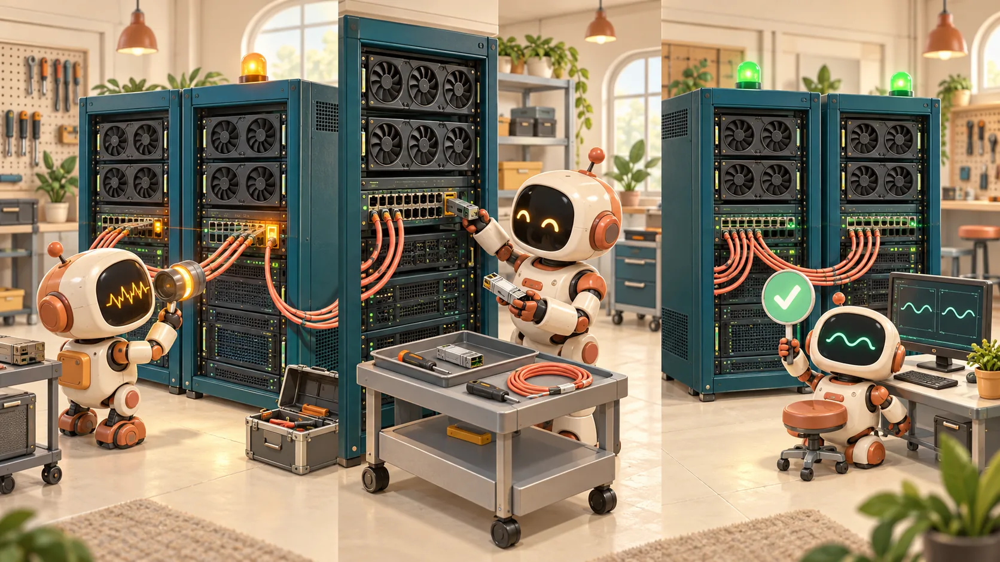
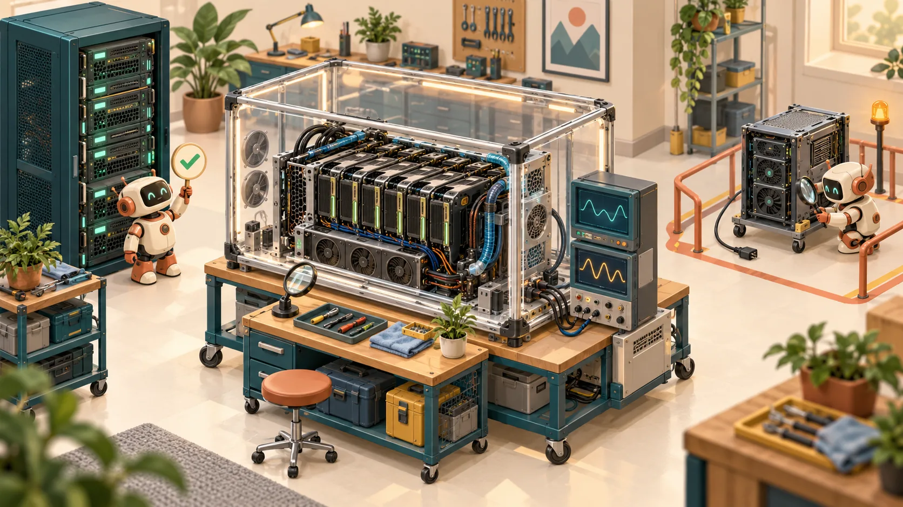

Unknown is a state.
Missing telemetry is an observability incident. It must not silently become “healthy” or trigger an unsupported hardware diagnosis.
An independent engineering lab · by Siva Babu
An observability signal is the beginning of a story. Follow it through a GPU fleet—from the first benchmark to a verified repair—and see what it means for the workload.

THE INTERACTIVE OPERATING STORY
Explore recorded executions of the lab code. Every phase has a state, a reason, and evidence. The hardware and workload telemetry are synthetic.

Illustrations are animated explanations. Charts and state are labeled separately.
The engineering pointA green dashboard is a hypothesis. Revalidation is the proof.
Read the implementationTRACE THE RESPONSIBILITY
Metrics show the symptom. Inventory locates the asset. A workflow controls the action. A workload check verifies the outcome.
Executable core: Python, SQLite, scoped HTTP API, persistent repair state, qualification gates, and failure scenarios. Optional integration profile: the telemetry and workflow services configured in the repository. The public replay does not run those services.

CAPACITY MUST EARN ITS PLACE
“Installed” and “ready to run customer work” are different states. Qualification captures a baseline and withholds capacity that fails its acceptance policy.
Stable identity, hardware configuration, component and topology relationships.
Versioned checks, explicit thresholds, failure evidence. Unsupported hardware tests stay skipped.
A repair ticket closes the human task. Passing revalidation returns the node to service.
PRINCIPAL-LEVEL DECISIONS
A credible lab is explicit about uncertainty, blast radius, operating cost, and the difference between a demonstration and a production system.
Missing telemetry is an observability incident. It must not silently become “healthy” or trigger an unsupported hardware diagnosis.
Persist intent and outcomes. Deduplicate incidents and ticket creation. Resume after a worker restart without repeating a disruptive action.
Component replacement is an action. Workload and hardware revalidation establish whether the repair restored useful capacity.
THE ECONOMIC LENS
The lab estimates capacity exposure from affected GPUs, elapsed disruption, and an explicitly assumed hourly value. It is a scenario estimate, not measured energy or a claim of cash savings.
EVIDENCE, WITH BOUNDARIES
This project explores patterns described in public fleet operations material. It does not claim to reproduce Nscale’s private architecture, policies, or production performance.